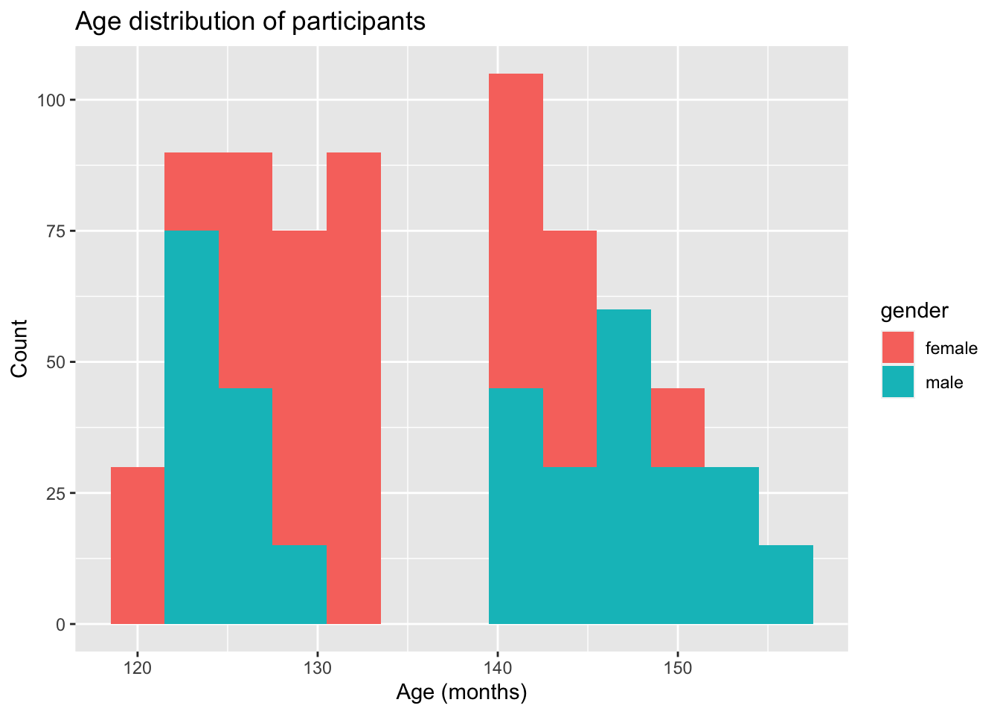
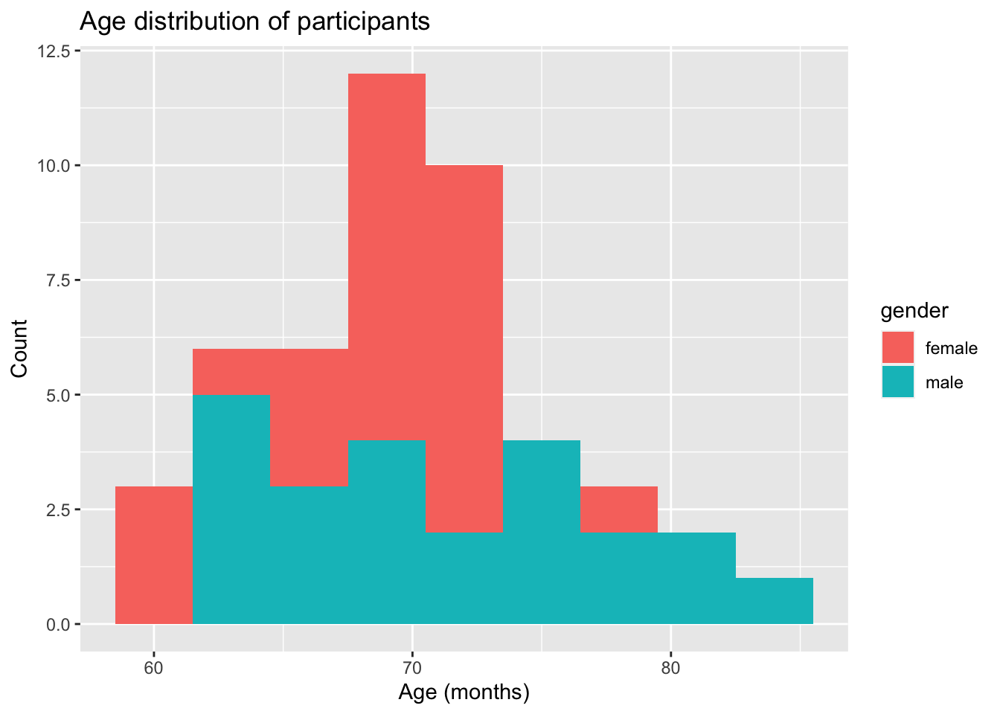

VR test reports
| name | school | gender | age_year | age_month | birthday | testing_date | age_months | difficulty | error_type | error_value | relative_error_value | made_error |
|---|---|---|---|---|---|---|---|---|---|---|---|---|
| Alfonz | LET | male | 6 | 74 | 2013-09-15 | let 27.1.20 | 146 | 3 | selection | 0 | 0.0000000 | FALSE |
| Alfonz | LET | male | 6 | 74 | 2013-09-15 | let 27.1.20 | 146 | 3 | incorect_placement | 0 | 0.0000000 | FALSE |
| Alfonz | LET | male | 6 | 74 | 2013-09-15 | let 27.1.20 | 146 | 3 | incorrect_object_order | 2 | 0.6666667 | TRUE |
| Alfonz | LET | male | 6 | 74 | 2013-09-15 | let 27.1.20 | 146 | 3 | incorrect_location_order | 2 | 0.6666667 | TRUE |
| Alfonz | LET | male | 6 | 74 | 2013-09-15 | let 27.1.20 | 146 | 3 | total_error | 4 | 0.3333333 | TRUE |
| Alfonz | LET | male | 6 | 74 | 2013-09-15 | let 27.1.20 | 146 | 4 | selection | 0 | 0.0000000 | FALSE |
Descriptives

Errors
CO = correct objects/správné předměty resp. Jejich Chyby (už přepočítáno)
OPE = object position errors/chyby v pozici
OOE = object order errors/chyby v pořadí předmětu
LOE = location order errors/chyby v pořadí pozice
These errors were renamed to a bit clearer naming schemes to prevent OOE, OPE etc.
The errors come in four different types:
selection error: the participant selected the wrong item
incorrect_placement: the participant placed the item at a wrong position
incorrect_object_order: the participant placed the item at a wrong order
incorrect_location_order: the participant placed the item at a location in a wrong order?
| Descriptives of error values in different difficulties and error types | |||||
| error_type | mean_error | sd_error | min | max | median |
|---|---|---|---|---|---|
| 3 | |||||
| incorect_placement | 0.15 | 0.47 | 0.00 | 2.00 | 0.00 |
| incorrect_location_order | 0.91 | 1.18 | 0.00 | 3.00 | 0.00 |
| incorrect_object_order | 0.81 | 1.12 | 0.00 | 3.00 | 0.00 |
| selection | 0.06 | 0.25 | 0.00 | 1.00 | 0.00 |
| total_error | 1.94 | 2.39 | 0.00 | 7.00 | 0.00 |
| 4 | |||||
| incorect_placement | 0.51 | 0.80 | 0.00 | 3.00 | 0.00 |
| incorrect_location_order | 1.49 | 1.49 | 0.00 | 4.00 | 1.00 |
| incorrect_object_order | 1.32 | 1.58 | 0.00 | 4.00 | 0.00 |
| selection | 0.23 | 0.70 | 0.00 | 4.00 | 0.00 |
| total_error | 3.55 | 3.51 | 0.00 | 12.00 | 3.00 |
| 5 | |||||
| incorect_placement | 1.57 | 1.44 | 0.00 | 4.00 | 1.00 |
| incorrect_location_order | 3.32 | 1.12 | 0.00 | 5.00 | 4.00 |
| incorrect_object_order | 2.91 | 1.40 | 0.00 | 5.00 | 3.00 |
| selection | 0.17 | 0.48 | 0.00 | 2.00 | 0.00 |
| total_error | 7.98 | 3.03 | 0.00 | 14.00 | 8.00 |

Relative error
As there is a difference in the potential number of errors possible at different difficulties, we also calculated the relative error value (error / difficulty). So the number 1 means the maximum number of errors possible at that difficulty.

So it looks like increasing number of items also increases the general error. So children are probably not simply remembering the first three locations or objects, but just not remembering anything much at all. Average relative error for all types of errors is above 40 percent, with the exception of selection.
The other very probably explanation is the dependency of the errors. If one location is incorrect, then more locations will be incorrect after that, as the participant will not be able to place the objects correctly. This will overestimate the number of errors, as the errors are not independent.
VR test results in different ages

Overall there seems to be a trend of older children to make more mistakes, especially in the 4 items difficutly.

Similar trend is even for the logistic regression modelling the likelihood of making any error. There seems to be an upward trend for older children to making errors more likely.